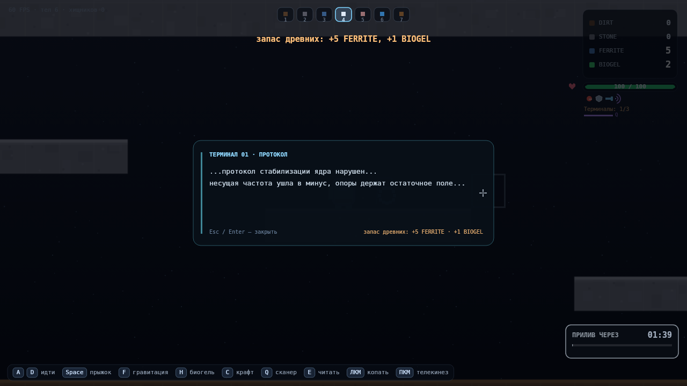
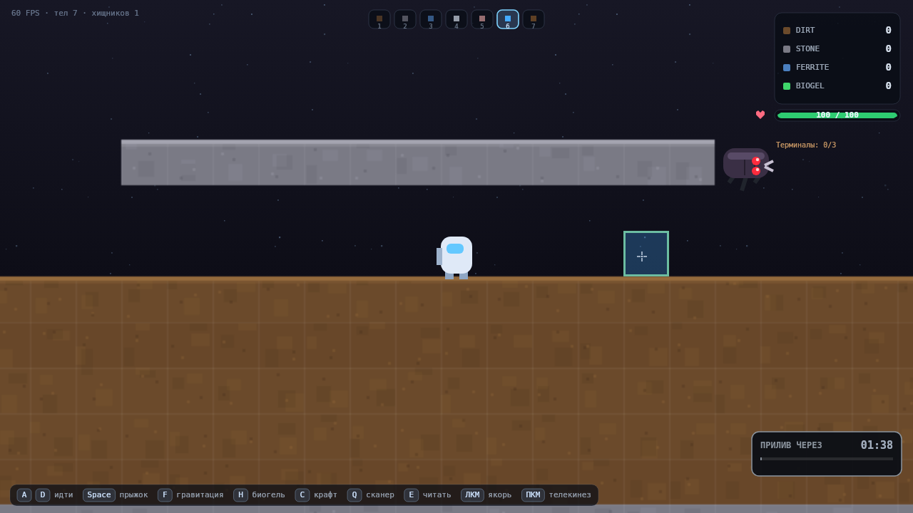
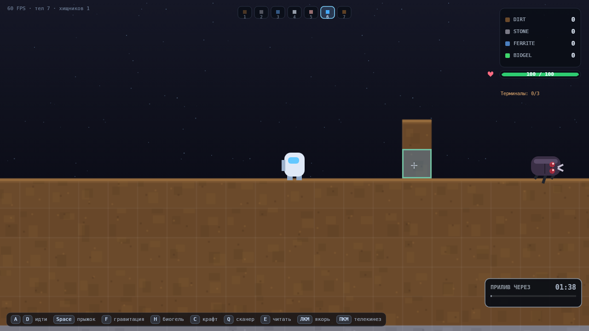

01Сборка

GRAVITY: VOID — M5
A / D — идти · Space — прыжок · F — гравитация · H — биогель · C — крафт · Q — сканер · E — прочитать терминал · ЛКМ — действие режима · ПКМ — телекинез
02Критерии M5
| Критерий | Как сделано | |
|---|---|---|
| Сканер крафтится на верстаке и экипируется | Четвёртый рецепт: 5 FERRITE + 5 STONE + 1 BIOGEL; hasScanner, как у прочих инструментов |
да |
Q показывает волну с ресурсами и врагами |
Радиус 25 тайлов, расходится 0.85 с, держится 2 с, кулдаун 5 с. Синие метки — FERRITE (руда в породе и дропы), оранжевые — терминалы, красные — хищники; за кадром — стрелки у края | да |
| Терминалы заспавнены в мире | 3 обелиска: 1 в зале, 2 в глубине в разных полосах; ниша вырезается гарантированно | да |
E у терминала открывает лор |
Подсказка «[E] Прочитать» над обелиском, панель с тремя разными текстами | да |
| После прочтения гаснет и даёт награду | Руны гаснут, read = true, +5 FERRITE +1 BIOGEL, повторно не открывается |
да |
| В HUD есть счётчик терминалов | Терминалы: 1/3 под иконками экипировки, рядом полоска кулдауна сканера |
да |
| Глубокие пещеры (30 рядов) существуют и копаются | 200×130; с 50-го ряда FERRITE 15.5 % против 5 % наверху, пустота 30.4 %, 25 полостей крупнее 40 тайлов; копание в глубине проверено таймингом | да |
review.html обновлён |
Эта страница | да |
03Что работает
Сканер
- Волна — не вспышка: фронт идёт 0.85 с, и это видно как расходящееся кольцо.
- Метки трёх типов различимы на глаз даже поверх такой же синей руды: у каждой тёмная подложка.
- Кулдаун нарисован полоской в HUD — не нужно угадывать, готов прибор или нет.
Терминалы
- Обелиск видно издалека по голубому ореолу — это цель, а не декорация.
- Прочитанный гаснет и остаётся в мире как память о находке.
- Подсказка появляется только в радиусе 2 тайлов и не висит поверх экрана.
Глубокие пещеры
- Вход читается по темноте: за 8 рядов до зоны картинка плавно гаснет.
- Вокруг игрока остаётся круг света радиусом 9 тайлов — копать можно, рассматривать нет.
- Руда лежит в стенах, а не только в дропах: пещера ощущается месторождением.
Давление
- В глубине живут 5 хищников против 3 в зале: спуск — осознанное решение.
- Два терминала из трёх там же, поэтому лор нельзя собрать, не спустившись.
Память
- Сейв
v3: флаг сканера, координаты терминалов, отметки прочитанного. - Сейв M4 (
v2) читается без ошибок: прогресс не теряется.
Производительность
- p50 8.16 мс, p95 9.9 мс на том же стенде, что M4 (7.5–8.0 / 10–11) — регрессии нет.
- Мир вырос на 30 рядов, но рендер тайлов по-прежнему один
drawImageна кадр.
04Дефекты и ограничения
Награда за терминал мала
- +5 FERRITE и +1 BIOGEL — это четверть гравитационной пушки и один укус хищника.
- Интерес держит счётчик
1/3, а не ресурс. По спеке цифра фиксирована.
E неудобна в бою
- Клавиша рядом с
W/R, а нажимать её надо вплотную к обелиску, когда рядом хищник.Qв этом смысле лучше: она на бегу. - Кандидат: чтение ещё и по ЛКМ на подсказке.
Терминал не показывается на карте мира
- Мини-карты в игре нет вообще: искать третий обелиск можно только сканером.
- Радиус 25 тайлов при мире 200×130 — это примерно 1/8 площади за один проход.
Сканер не различает руду и дропы
- Один и тот же синий маркер: и кристалл в стене, и кубик на полу.
- Плюс: не надо запоминать легенду. Минус: не видно, что можно поднять прямо сейчас.
Панель лора не ставит паузу
- Прилив и хищники идут, пока читаешь. Осознанно, но в глубине это может стоить HP.
Регрессия
- Все 186 прежних проверок зелёные; два теста поправлены честно (спавн хищников и число рецептов изменились по спеке, а не под результат).
05Скоуп
| Что | Почему так | Что делать |
|---|---|---|
| Сканер видит руду в стенах расширение спеки |
В спеке «все дропы FERRITE», но к моменту получения сканера дропов на карте единицы — прибор был бы мёртвым грузом. | Если нужно строго по спеке — это одна строка в collectScanTargets. |
| Стрелки у края экрана расширение спеки |
Радиус 25 тайлов больше кадра (20×11 тайлов при зуме 2): без стрелок треть находок остаётся за границей видимости. | Фиксирую как часть прибора. |
| Терминал — объект, а не тайл по спеке |
Обелиск надо гасить отдельно от породы и ставить в воздухе над полом. | Ничего, так и задумано. |
| Два терминала разведены по глубине трактовка |
Иначе оба могли попасть в одну пещеру и «исследование» схлопнулось бы в один спуск. | Фиксирую. |
| Мир не на паузе под лором трактовка UI |
Пауза спрятала бы прилив — основное давление игры. | Нужна пауза — одна строка, прошу решение. |
| Восстановление ядра — нет вне скоупа |
Спека прямо исключает финал; терминалы дают только текст и ресурс. | Не делал. |
06Запросы ревью
1. Не ломает ли расширение мира вниз производительность?
Нет. Тайлы идут через offscreen-буфер и один drawImage на кадр,
поэтому 130 рядов стоят столько же, сколько 100: drawTiles 6.2 мс против 6.1 мс в M4.
Выросли только память (буфер +30 %, ≈4.2 МБ) и первая отрисовка силуэтов.
Новая постоянная цена — экранный градиент темноты, и он заметен только в глубине.
2. Удобно ли нажимать Q и E во время движения?
Q — да: палец на A/D её не задевает,
и это не мгновенное действие — нажал на бегу, посмотрел волну. E — хуже: стоит
вплотную к W/R, а жать надо у обелиска, где рядом хищник.
Если подтвердите — добавлю чтение по ЛКМ на подсказке.
3. Достаточно ли награды за терминалы?
Как ресурс — почти нет: +5 FERRITE это четверть пушки. Как цель — работает:
счётчик 1/3 тянет искать остальные, а двое из трёх лежат в глубине, то есть
заставляют спускаться. Если нужна другая валюта — дешёвый вариант: открывать за прочтение
рецепт (например, пушку только после второго терминала).
07Скриншоты








08Как проверено
# 263 автопроверки логики, физики и критериев M0–M5 cd tools node verify.mjs # → 263/263 проверок пройдено node screenshots.mjs # → 29 кадров в ../screenshots node perf.mjs # → p50 8.16 мс, p95 9.9 мс на кадр
Что покрыто
- Здоровье, урон от падения по формуле, мягкое падение без урона.
- Прилив: −30 без укрытия, 0 под куполом с потолком.
- Смерть: −50 % ресурсов, респавн, неуязвимость, красный экран.
- Хищник: спавн в пещерах, IDLE → AGGRO → FLEE, укус, урон от ящика, смерть.
- M3.5: спуск с платформы, подъём по уступу, прыжок через блок игрока, мелкая яма, честная ловушка на 4 тайла, отсутствие бесконечных скачков у высокой стены.
- M4: постановка верстака и списание цены, отказ без ресурсов, вечность верстака, меню только рядом с ним и его клавиши, тайминги копания с резаком и без, урон с бронёй и без, радиус телекинеза 8 → 15, сохранение флагов.
- M5: новый размер мира и копание в глубине, концентрация FERRITE замером по тайлам,
хищники глубины, спавн терминалов на полу, чтение лора и запрет повторной награды,
волна сканера (радиус, кулдаун, гашение, цели трёх типов, отсечение за 25 тайлов),
сохранение флага и координат терминалов, чтение старого сейва
v2, одинdrawImageна кадр при 130 рядах. - BIOGEL: 4 на карте,
Hлечит на 40, без геля не лечит. - Прилив: 2 тайла на малой базе и 10 % на 60 постройках.
- Регрессия M2: якорь, защита, сейв, цикл фаз, купол дугой.
Чего проверки не делают
- Не браузерный FPS: цифры — время JS+draw в headless.
- Не проверяют, страшно ли в пещере: это только руками.